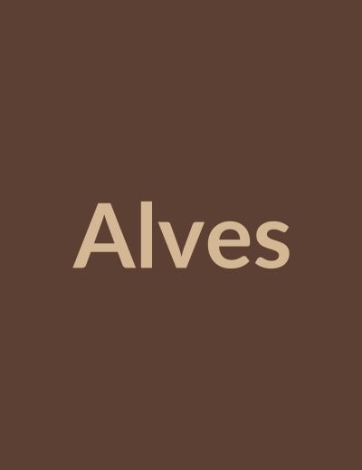

Personagens
Cada nome abre um mandado: leia o cartaz e, se quiser, deixe marcas na margem.
Era da Fratura
-

Alves, o Cartógrafo do VãoHomem de tinta que some e mapas que mentem por omissão; assina tudo como quem desafia o silêncio.
-
Mira Duschene
Cirurgiã de memória ritual: vende esquecimento como piedade, mas nunca se aplica o remédio a si.
Era do Pacto Quebrado
-
 O Arquivista Sem Olhos
O Arquivista Sem OlhosEntidade ou cargo: comparece quando um título já apagado do mundo é pronunciado em voz alta.
-
Sete nomes rasurados
Manchas no papel onde deveriam haver assinaturas; a contagem não admite um oitavo nome.